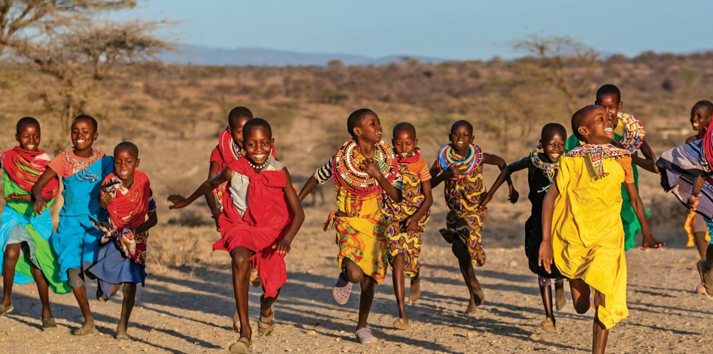
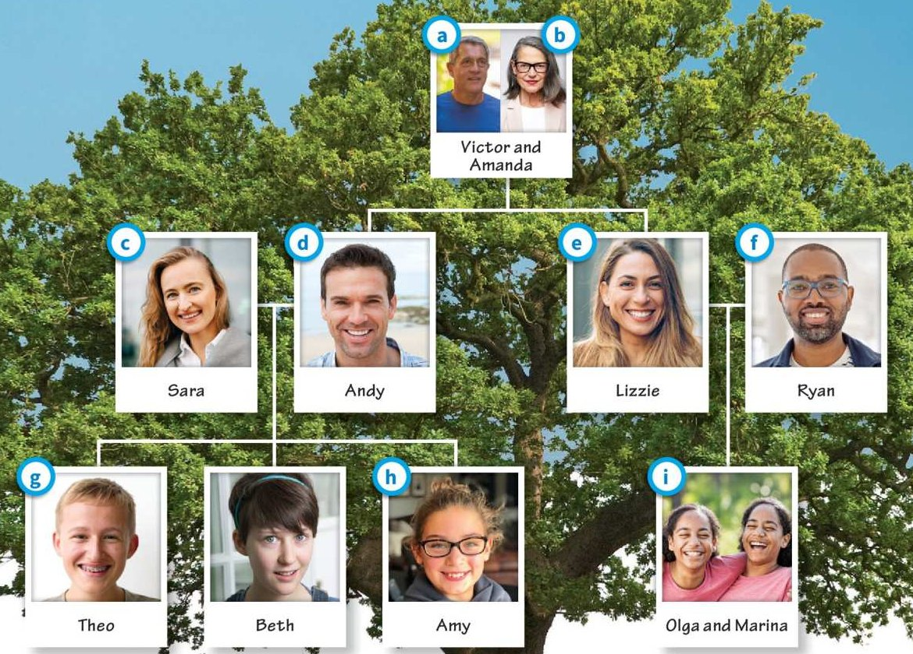
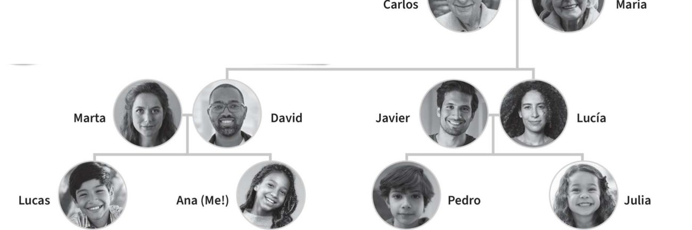

Unit 1 Friends and family: how are friends and families different? Words for the people in a family: mum, dad, aunt, uncle, cousin…
Найди в телефоне фото своих друзей или семьи (или нарисуй). Покажи его и расскажи о людях на нём.

Посмотри на фото. Чем друзья отличаются от семьи?
Перед просмотром: друзья — это семья?
Откуда Лаура и Андрес? Посмотри видео и проверь.
Laura and Andrés are from .
Какая семья из видео тебе нравится больше всего? Почему?
Посмотри видео ещё раз. Выбери правильные слова.
1. Laura and Andrés live on a big in the mountains.
2. They grow plants.
3. Laura helps her .
4. Ji-woo is years old. She lives in Seoul, South Korea.
5. Her is a “sea woman” on Jeju Island.
6. The sea women can stay under water for !
У тебя одна минута. Напиши как можно больше слов на тему «семья».

Посмотри на семейное древо Бет. Подбери к людям a–i девять слов из рамки. Послушай и проверь.
aunt brother cousin dad daughter grandad granddaughter grandma grandson husband mum nephew niece sister son uncle wife
b Amanda
c Sara
d Andy
e Lizzie
f Ryan
g Theo
h Amy
i Olga and Marina
Нажми на слово, чтобы услышать его. Повтори за диктором.
Ещё раз посмотри на семейное древо Бет. Закончи ответы словами из упражнения 1. Послушай, проверь и повтори.
2. Lizzie + Olga = mum and
3. Amanda + Theo = grandma and
4. Ryan + Beth = and
5. Lizzie + Theo = and
6. Theo + Beth = and
Распредели слова из упражнения 1 по спискам. Перетащи каждое слово в нужную колонку.
Нарисуй своё семейное древо. Используй древо Бет как образец.
Draw it on paper, or write it here: one person on each line.
Нарисуй на бумаге или напиши здесь: по одному человеку на строчке.
Не показывай своё древо. По очереди называйте имя человека из своей семьи. Сможет ли собеседник угадать, кто это?
Carlos.
BIs he your brother?
ANo, he isn’t. Try again.
Представь, что ты знаменитость. Напиши предложения о своей семье. Расскажи собеседнику. Угадает ли он, кто ты?
I’m British. My brother is William. My wife is Meghan. She’s American. My children are Archie and Lilibet.
BAre you Prince Harry?
AYes, I am.
Угадай правильный ответ.
A Canadian woman, Vera Sommerfeld, is a great-great-great grandma 🇨🇦. There are … generations of women in her family.
great-great-great grandma = прапрапрабабушка · generation = поколение
Найди интересный факт о какой-нибудь семье. Напиши вопрос для учителя.
Напиши правдивые и ложные предложения о людях в своей семье. Прочитай собеседнику. Угадает ли он, какие предложения ложные?
Найди в сетке слова на тему «семья». Нажимай на буквы, потом запиши слова.
Слова идут слева направо → и сверху вниз ↓. Первая буква — подсказка.
1.
2.
3.
4.
5.
6.
7.
8.
9.
10.
11.
12.
13.
14.
Соедини слова 1–8 с a–h, чтобы получились пары.
Какое слово из упражнения 1 может обозначать и мужчину, и женщину?

Посмотри на семейное древо Аны. Закончи её предложения правильными словами.
1. Carlos is my grandad and María is my .
2. Marta is my and David is my .
3. Javier is my and Lucía is my .
4. Lucas is my .
5. Pedro and Julia are my .
Выбери правильный ответ.
Hi! I’m David and my sisters are April, May and June. This is my mum.
MumHi! I’m a mum with four children. My daughters are April, May and June and this is my son. His name is … .
Угадай: какое мужское имя самое популярное в Великобритании за последние 500 лет?
Найди ещё один интересный факт об именах. Напиши вопрос для учителя.